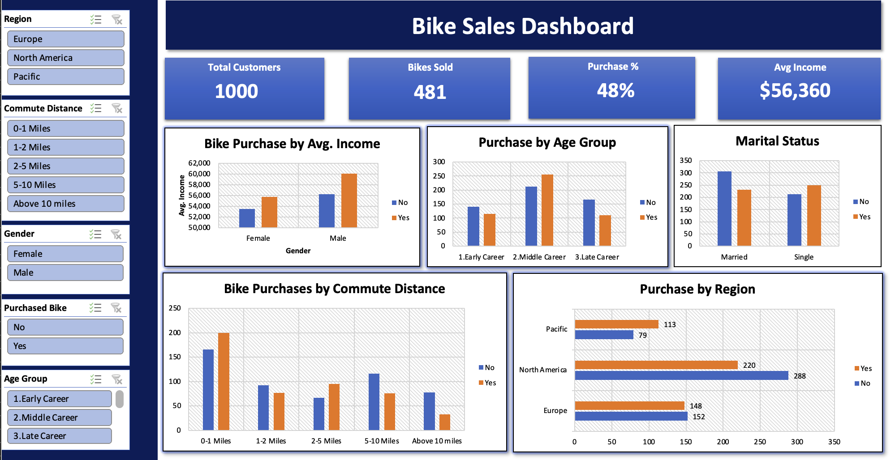
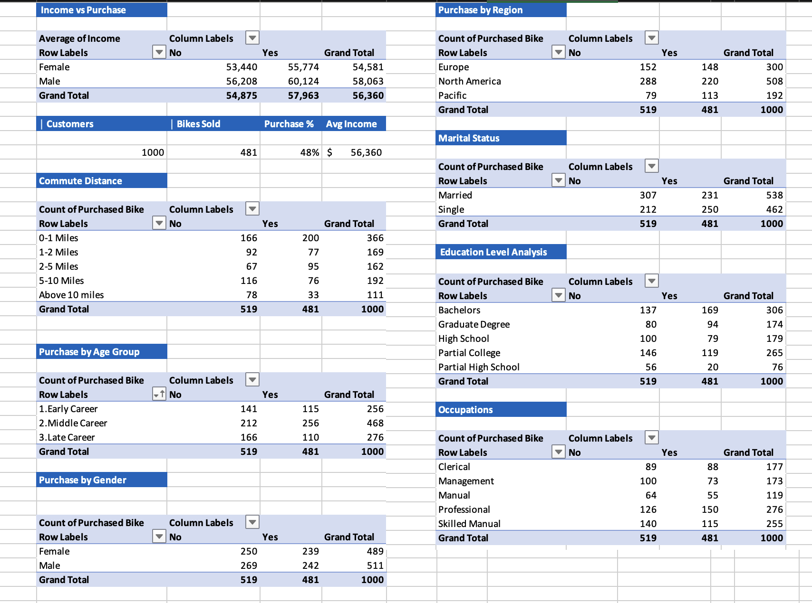

Who actually buys a bike?
I analysed 1,000 customer records in Excel to find which customers are most likely to buy a bike, and built an interactive dashboard from the results.
Final dashboard
Final Bike Sales Dashboard (screenshot of the interactive Excel version). The slicers filter by region, commute distance, gender, purchase status and age group.
The challenge
A bike company wants to know which customers are most likely to buy, so marketing can target the right people instead of treating everyone the same.
The data
1,000 customer records with 13 attributes: income, age, gender, marital status, children, education, occupation, home ownership, cars owned, commute distance and region. The result I measured is Purchased Bike (Yes / No).
What I did in Excel
- Cleaned the data: Checked for missing values and made the column consistent.
- Removed duplicates: Deleted repeated customer records so every person is counted only once.
- Made the columns easier to read:
- Marital Status: changed
MandSto Married and Single. - Gender: changed
MandFto Male and Female. - Income: Formatted as currency, so values like 40000 show as $40,000.
- Commute Distance: changed
10+ Milesto Above 10 Miles, so the distance groups follow a clear order from shortest to longest.
- Marital Status: changed
- Created an Age Group column: With an
IFformula: Early Career (35 and under), Middle Career (36 to 50) and Late Career (51 and over). - Built pivot tables: Comparing bike purchases by age group, gender, region, marital status, education, occupation, cars owned, commute distance and home ownership.
- Designed the dashboard: With KPI cards (customers, bikes sold, purchase %, average income), charts and slicers so anyone can filter the results.
Behind the dashboard: pivot tables
Each chart on the dashboard is built from one of these pivot tables.

Key findings
- Overall, 48.1% of customers bought a bike (481 out of 1,000).
- Middle-career customers (36 to 50) buy the most: 54.7%, compared with 39.9% for ages 51 and over.
- Cars owned is a strong signal. Customers with no car buy at 61%, with two cars only 36%.
- Commute distance matters. Commutes up to 5 miles buy at 55 to 59%, while over 10 miles drops to 30%.
- Pacific region leads at 59%, North America trails at 43%.
- Single customers buy more than married ones (54% vs 43%).
- Income plays only a modest role, and gender and home ownership made almost no difference.
Recommendation
Focus marketing on middle-career, single customers with short commutes and few cars, especially in the Pacific region. This group converts better than a broad campaign.
Tools used
Excel, PivotTables, Slicers, Dashboard design, IF formulas.